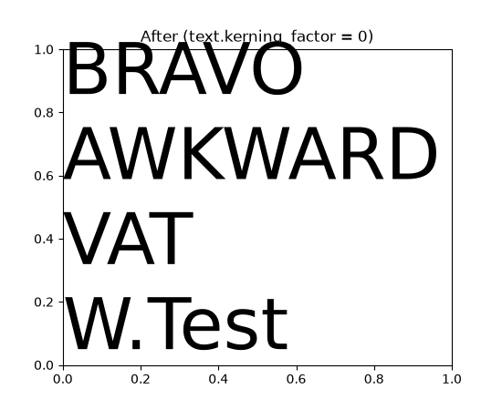

What's new in Matplotlib 3.2 (Mar 04, 2020)#
For a list of all of the issues and pull requests since the last revision, see the GitHub statistics for 3.11.1 (Jul 17, 2026).
Unit converters recognize subclasses#
Unit converters now also handle instances of subclasses of the class they have been registered for.
imsave accepts metadata and PIL options#
imsave has gained support for the metadata and pil_kwargs
parameters. These parameters behave similarly as for the Figure.savefig()
method.
cbook.normalize_kwargs#
cbook.normalize_kwargs now presents a convenient interface to normalize
artist properties (e.g., from "lw" to "linewidth"):
>>> cbook.normalize_kwargs({"lw": 1}, Line2D)
{"linewidth": 1}
The first argument is the mapping to be normalized, and the second argument can be an artist class or an artist instance (it can also be a mapping in a specific format; see the function's docstring for details).
FontProperties accepts os.PathLike#
The fname argument to FontProperties can now be an os.PathLike,
e.g.
>>> FontProperties(fname=pathlib.Path("/path/to/font.ttf"))
Gouraud-shading alpha channel in PDF backend#
The pdf backend now supports an alpha channel in Gouraud-shaded triangle meshes.
Kerning adjustments now use correct values#
Due to an error in how kerning adjustments were applied, previous versions of Matplotlib
would under-correct kerning. This version will now correctly apply kerning (for fonts
supported by FreeType). To restore the old behavior (e.g., for test images), you may set
the text.kerning_factor rcParam to 6 (instead of 0). Other values have undefined
behavior.
With corrected kerning (below), slanted characters (e.g., AV or VA) will be spaced closer together, as well as various other character pairs, depending on font support (e.g., T and e, or the period after the W).
(Source code, 2x.png, png)
{kind=link}
{kind=link}
{kind=link}

bar3d lightsource shading#
bar3d() now supports lighting from different angles when the shade
parameter is True, which can be configured using the lightsource
parameter.
Shifting errorbars#
Previously, errorbar() accepted a keyword argument errorevery such
that the command plt.errorbar(x, y, yerr, errorevery=6) would add error
bars to datapoints x[::6], y[::6].
errorbar() now also accepts a tuple for errorevery such that
plt.errorbar(x, y, yerr, errorevery=(start, N)) adds error bars to points
x[start::N], y[start::N].
Improvements in Logit scale ticker and formatter#
Introduced in version 1.5, the logit scale didn't have an appropriate ticker and formatter. Previously, the location of ticks was not zoom dependent, too many labels were displayed causing overlapping which broke readability, and label formatting did not adapt to precision.
Starting from this version, the logit locator has nearly the same behavior as the locator for the log scale or the linear scale, depending on used zoom. The number of ticks is controlled. Some minor labels are displayed adaptively as sublabels in log scale. Formatting is adapted for probabilities and the precision adapts to the scale.
rcParams for axes title location and color#
Two new rcParams have been added: rcParams["axes.titlelocation"] (default: 'center') denotes the default axes title
alignment, and rcParams["axes.titlecolor"] (default: 'auto') the default axes title color.
Valid values for axes.titlelocation are: left, center, and right.
Valid values for axes.titlecolor are: auto or a color. Setting it to auto
will fall back to previous behaviour, which is using the color in text.color.
3-digit and 4-digit hex colors#
Colors can now be specified using 3-digit or 4-digit hex colors, shorthand for
the colors obtained by duplicating each character, e.g. #123 is equivalent to
#112233 and #123a is equivalent to #112233aa.
Added support for RGB(A) images in pcolorfast#
Axes.pcolorfast now accepts 3D images (RGB or RGBA) arrays.